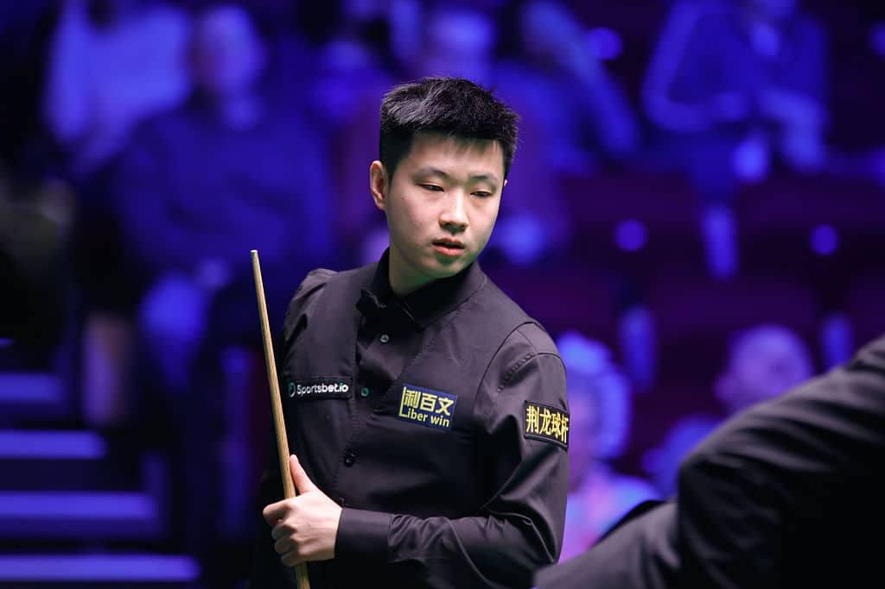
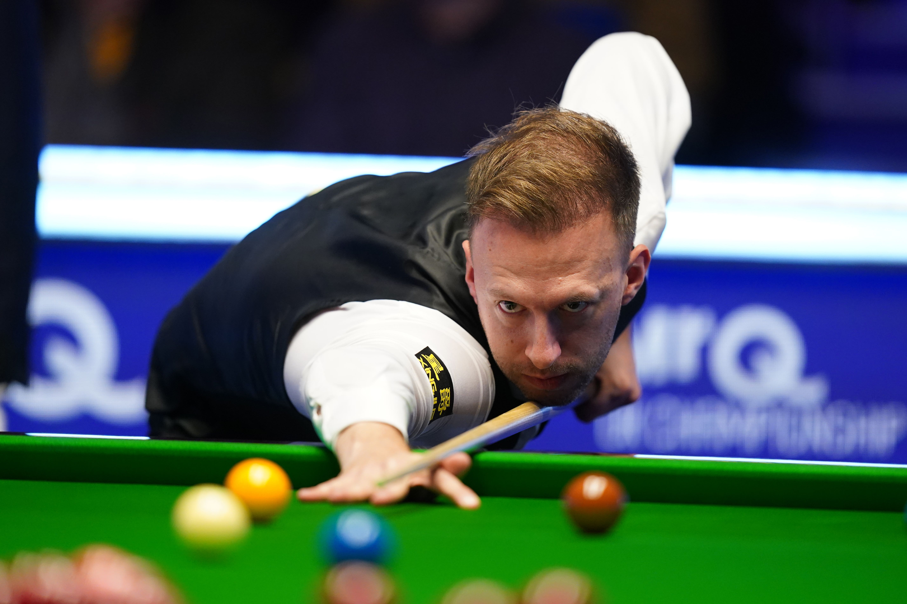
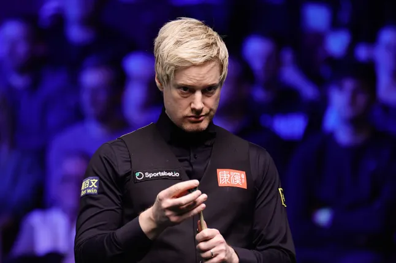
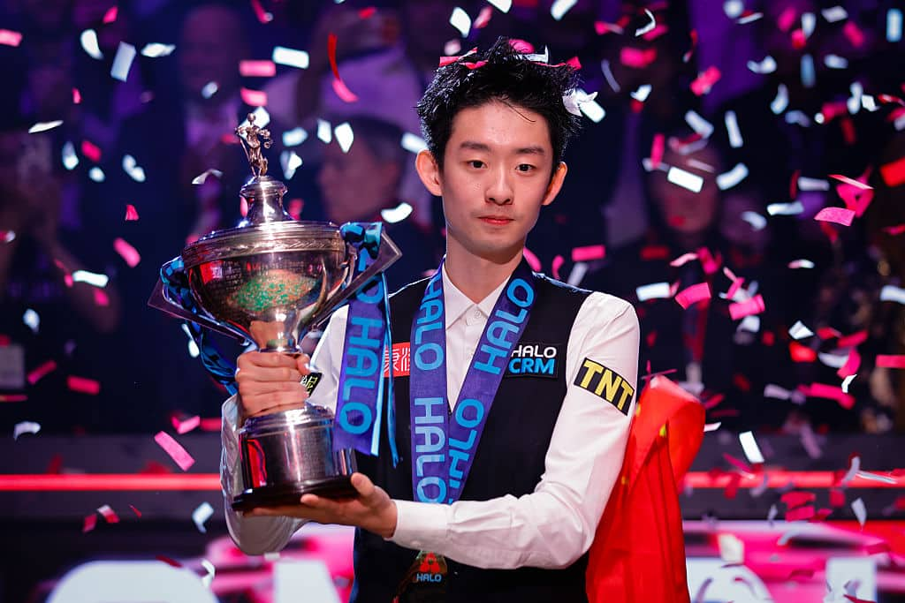
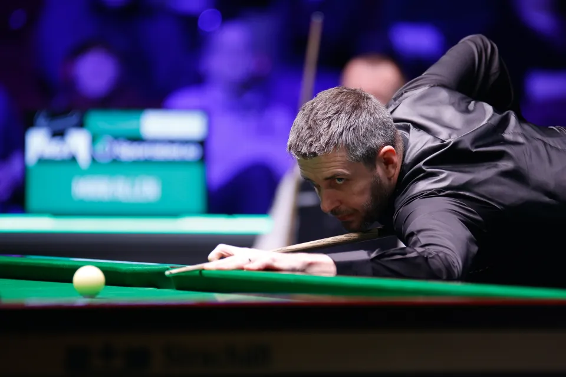

Snookerin pelaajat
Maailman tunnettuja snookerpelaajia
Snookerissa on paljon tunnettuja pelaajia, jotka ovat saavuttaneet menestystä ammattilaistasolla.
Ronnie O'Sullivan on yksi snookerin tunnetuimmista pelaajista. Hänet tunnetaan erityisesti nopeasta pelityylistään ja pitkästä ammattilaisurastaan.
Judd Trump on tunnettu hyökkäävästä pelityylistään ja näyttävistä lyönneistään. Hän on saavuttanut urallaan useita merkittäviä turnausvoittoja.
Mark Selby tunnetaan tarkasta puolustuspelistään ja taktisesta pelityylistään. Shaun Murphy puolestaan tunnetaan vahvasta lyöntitekniikastaan ja pitkistä lyöntisarjoistaan.
Nykyään kiinalaiset pelaajat ovat nousseet snookerin huipulle suuren harrastajamäärän ja taloudellisten panostusten myötä. On arvioitu, että Kiinassa on jopa 300 000 biljardi- ja pool-salia sekä 5,2 miljoonaa snookerin harrastajaa.
Maailman viisi parasta pelaajaa
Snookerin maailmanranking kertoo, ketkä pelaajat ovat menestyneet parhaiten viime aikojen turnauksissa. Tässä esitellään viisi parasta pelaajaa syyskuun 2026 rankingin mukaan.

- Sija
- 1
- Nimi
Zhao Xintong
- Lempinimi
- "The Cyclone"
- Ikä
- 29
- Kansalaisuus
- Kiina
Voitti maailmanmestaruuden vuonna 2025 amatöörinä ja nousi elokuussa 2026 maailmanranking-ykköseksi.

- Sija
- 2
- Nimi
Judd Trump
- Lempinimi
- "The Ace in the Pack"
- Ikä
- 37
- Kansalaisuus
- Englanti
Maailmanmestari vuodelta 2019. Hyökkäävä ja näyttävä pelaaja, joka oli maailmanranking-ykkönen elokuusta 2024 elokuuhun 2026.

- Sija
- 3
- Nimi
Neil Robertson
- Lempinimi
- "The Thunder from Down Under"
- Ikä
- 44
- Kansalaisuus
- Australia
Voitti maailmanmestaruuden vuonna 2010 ensimmäisenä australialaisena. Tunnetaan tarkasta pitkien lyöntien pelistä.

- Sija
- 4
- Nimi
Wu Yize
- Lempinimi
- "The Lanzhou Lion"
- Ikä
- 22
- Kansalaisuus
- Kiina
Vuoden 2026 maailmanmestari, joka voitti finaalissa Shaun Murphyn 18–17. Toiseksi nuorin maailmanmestari koskaan.

- Sija
- 5
- Nimi
Mark Selby
- Lempinimi
- "The Jester from Leicester"
- Ikä
- 43
- Kansalaisuus
- Englanti
Nelinkertainen maailmanmestari (2014, 2016, 2017 ja 2021). Tunnetaan tarkasta puolustuspelistä ja taktisesta pelityylistä.
Ranking päivittyy kauden aikana, joten sijoitukset voivat muuttua. Ajantasaisen listan löydät snooker.org-sivustolta .